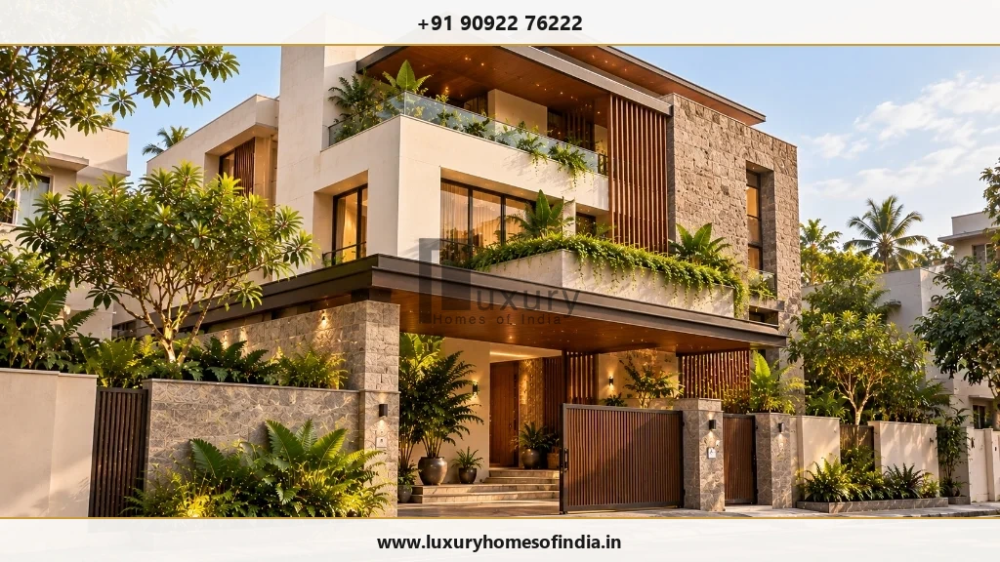
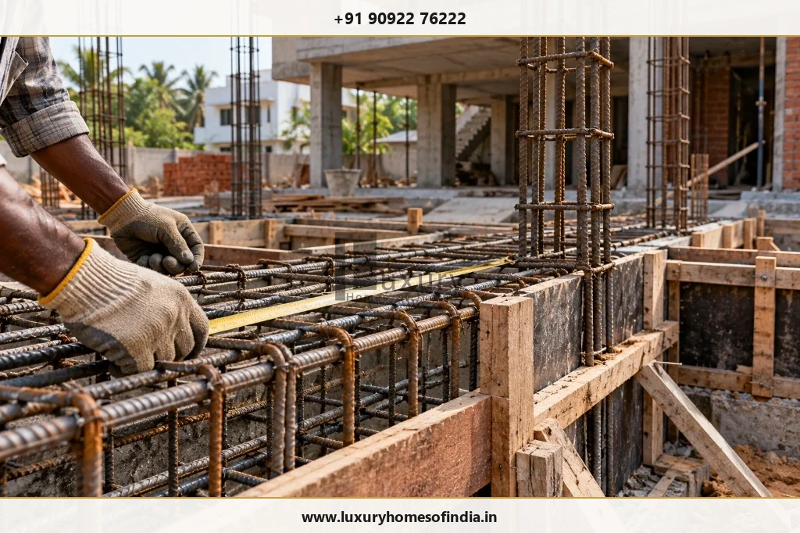
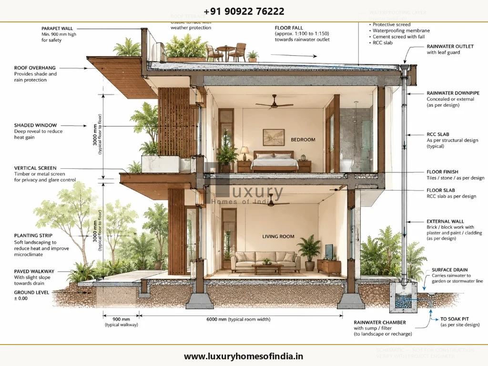
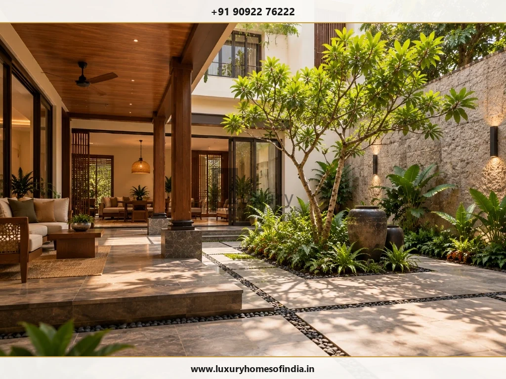

High-End Home Builders in Chennai: A Guide to Building a Bespoke Home
Building a luxury home involves coordinating architecture, structural engineering, interior execution, and construction under a single transparent process.
Executive Summary: Selecting High-End Builders in Chennai
Choosing high-end home builders in Chennai requires looking beyond expensive surface finishes or visual 3D renders. A true luxury residence balances architectural space planning, site microclimate defense, structural rebar engineering, and bespoke interior execution. Luxury Homes of India brings architectural design, civil construction, structural engineering, and luxury interiors under a single unified workflow.
What Defines a High-End Home?
A high-end home is not defined by expensive finishes alone. It is the seamless relationship between architectural proportion, spatial usability, material selection, structural detailing, and long-term maintainability that shapes the overall experience of living in a home.
A well-planned luxury home begins with the people who will occupy it. Floor plan layouts should reflect daily routines, privacy expectations, entertaining habits, storage requirements, and relationships with outdoor gardens.
Core elements that define true high-end home building include:
- Architecture & Proportions: Establishing a coherent relationship between building massing, window openings, natural material palettes, and site surroundings.
- Spatial Planning: Creating logical, fluid movements between private bedrooms, formal entertainment lounges, wet kitchens, utility zones, and outdoor decks.
- Material Selection: Specifying natural stone, hardwoods, marine-grade metals, and performance glazing suited to Chennai's coastal climate.
- Lighting Architecture: Harmonizing natural daylight distribution with layered, dimmable architectural light fixtures.
- Building Performance: Ensuring proper thermal insulation, solar shading, waterproofing membranes, sub-surface drainage, and equipment accessibility.
- Personalization: Tailoring interior features, custom joinery, and Vastu orientations around your family's explicit preferences.

Essential Services to Consider When Choosing a Home Builder
1. Architectural Design & Space Planning
Architecture establishes a home's spatial organization, character, and relationship with its plot. Room layouts, circulation paths, daylight orientation, and privacy must be resolved before finalizing facade elevations. Vastu preferences should be raised early to integrate naturally with structural grids.
2. Structural Engineering
Structural decisions govern the feasibility of architectural features like column-free living rooms, cantilevered balconies, double-height volumes, and roof garden terraces. Foundation design must respond directly to site soil conditions and structural load calculations performed by licensed engineers.

3. Turnkey Villa Construction Execution
A turnkey delivery model unifies design development, material procurement, civil construction, specialist installations, and snagging inspections under a single master contract. This eliminates scope gaps between separate design teams and building contractors.
4. Luxury Interior Execution
Interior architecture should develop alongside civil construction. Flooring selections, modular kitchens, luxury bathroom fixtures, bespoke wardrobes, ceiling drop details, and lighting locations require early technical coordination before slab casting and electrical conduit placement.
5. Smart-Home Automation Planning
Home automation streamlines lighting control, climate management, motorized blinds, security cameras, and audio distribution. Low-voltage cabling, server rack locations, and control keypads must be planned into architectural and electrical layouts from the start.

Designing a High-End Home for Chennai's Microclimate
Building a luxury home in Chennai demands technical defenses against intense tropical heat, high humidity, salt-laden coastal air, and heavy northeast monsoon rainfalls.
- Daylight, Heat & Solar Shading: Orienting major glass facades away from direct south-west solar exposure and deploying deep balcony overhangs, vertical timber louvers, and Low-E double glazing.
- Monsoon Waterproofing & Drainage: Specifying multi-layer waterproofing screeds over RCC roof slabs, sloped terrace drains, heavy-duty scuppers, and underground rainwater harvesting recharge sumps.
- Coastal Material Durability: Utilizing marine-grade SS316 stainless steel hardware, electro-coated aluminum window frames, fluoropolymer exterior paint, and high-density concrete cover over rebar steel for sites along ECR or coastal micro-zones.
- Maintenance Access Routes: Providing practical access hatches for concealed HVAC units, plumbing stacks, water heaters, and electrical distribution boards.

How to Compare Proposal Scopes from High-End Builders
High-End Home Construction Proposal Matrix
| Proposal Scope Element | Questions to Resolve | Technical & Contractual Deliverables |
|---|---|---|
| Design & Engineering | Which drawings, calculations, and revisions are included? | Architectural working drawings, certified RCC structural calculations, 3D renders. |
| Site Prep & Foundation | What soil investigations, excavation, and backfilling are covered? | Soil test report, structural foundation plan, anti-termite treatment warranty. |
| Civil Structure | What concrete grades and steel specifications govern execution? | M25/M30 ready-mix concrete, Fe550D TMT steel rebar, solid blockwork specifications. |
| Materials & Finishes | Which product brands, tile allowances, or stone grades apply? | Itemized bill of quantities (BOQ), material sample approvals, brand schedules. |
| Luxury Interiors | Are kitchens, wardrobes, false ceilings, and lighting included? | Interior shop drawings, factory joinery specifications, false ceiling reflected plans. |
| Building Services (MEP) | What electrical cabling, plumbing lines, and AC provisions are covered? | Fire-retardant wiring, CPVC/UPVC plumbing diagrams, HVAC ducting layouts. |
| Handover & Warranty | Which snagging inspections and post-handover support apply? | Snagging audit checklist, waterproofing warranties, as-built drawing sets. |

How Luxury Homes of India Fits Into Your Planning
Luxury Homes of India (LHI) offers integrated residential services covering architectural design and space planning, structural engineering, turnkey villa construction, luxury interior execution, and smart home automation.
Before requesting a consultation, prepare the following details to ensure a productive initial discussion:
- Plot Details: Survey map, boundary dimensions, road orientation, and site location in Chennai.
- Space Targets: Approximate total built-up area and required room list (e.g., 5 BHK, courtyard, home cinema, pool).
- Design Preferences: Preferred architectural style (contemporary, tropical, heritage) and visual reference images.
- Budget Parameters: Target investment range and preferred contract structure (turnkey execution vs. phase-wise construction).
Discuss Your Home Project With Luxury Homes of India
Bring your plot details, design ideas, and budget expectations. Speak with our architectural and construction engineering team today.